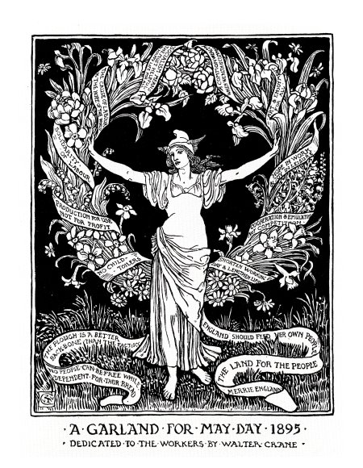

MAY DAY 2019

Albany has an amazingly rich history of resistance against various oppressions. From the anti-rent war, to the labor movement, and resistance against white supremacy and colonization this region's history is one of its people.
This story map is a first step toward making a people's history of resistance and the opressions that spurned it publicly available. We invite you to follow and contribute to the project here.
Anti-Rent War
On July 4, 1839, angry tenant farmers on New York's oldest estate assembled in the Albany County village of Berne to adopt a declaration of independence from their landlord. Nobody counted heads that afternoon. But 3,063 families leased farms on the 726,000-acre Manor of Rensselaerwyck, and all of them had cause to complain. Manor contracts required an annual rent for every 100 acres ranging from ten to fourteen bushels of wheat, delivered to the landlord and ready for milling. All mill sites and mines were reserved, together with all rights necessary and proper to make them available to the Van Rensselaer family or its agents. Mills might be built, cropland or pasture flooded, and roads laid out on the tenant's premises without payment of compensation. There were also feudal dues. Every year farmstead heads owed a day's labor with horse and wagon and were bound to deliver "four fat fowl" on rent day ... Every indenture enumerated remedies for breach of this or any other covenant. Among them was the landlord's right to reenter the premises and repossess not only the land but also any improvements -- houses barns, fences, growing crops -- annexed to the land. Taken together, proclaimed the Independence Day mass meeting at Berne, these contractual provisions amounted to "voluntary slavery." The time had come to avow "that we can no longer endure the infamy of tamely entailing upon future generations such wretchedness and unhallowed bondage as inevitably awaits them if we any longer submit ourselves to be thus unjustly, unrighteously, inhumanly oppressed and imposed upon." So began the longest rent strike in United States history.
-- The Anti-rent Era in New York Law and Politics, 1839-1865
Slavery
By 1790, when the first census was taken, Albany held the highest slave count of any county in the state with 3,722 residents living in slavery – 572 just in the city of Albany itself, out of a total city population of 3,498. Schuyler claimed 13 enslaved persons on this census record. Even those households which did not own slaves were engaged in the trade in other ways. Boatmen trafficked human cargo upriver from NYC, bankers and lawyers brokered deals exchanging human property, citizens who could not afford slaves of their own rented their labor from their masters, and the products of farms and mills were traded downriver to New York and from there to sugar plantations in the Caribbean. This included produce from Schuyler’s mills in Saratoga.
Meanwhile, on Schuyler’s Albany estate, the enslaved population seems to have been made up of a handful of men, several women and their children. The farm land was largely worked by white tenant farmers, so the majority of enslaved men were engaged in moving materials between Schuyler’s properties, working with the animals, operating mills and other skilled and semi-skilled labor. Under Catherine Schuyler’s direction, enslaved women tended to household tasks such as cooking, washing, and perhaps helping tend to the children. Evidence suggests that enslaved children were trained to serve as wait staff within the home. Several enslaved people made attempts to escape from the Schuyler property over the years.
Manumission efforts in New York did not truly begin in New York until after the American Revolution. In 1788, the slave trade was banned in state, though loopholes could be found and slave owners kept title to those under their enslavement. In 1799, New York passed “An Act for the Gradual Abolition of Slavery” which allowed for the manumission of slaves dependent on their age and date of birth. In 1827, slavery was outlawed entirely, but even under these laws many slave owners were able to transfer their enslavement into indentured servitude or otherwise devise unfair working conditions for “freemen”. Slavery may have functioned differently in the North, but it was the economic base on which New York and Albany were built.
Hilton Strike
After a four-month long boycott and picket line, HTC has won a contract for the 146 workers at the Hilton Albany hotel. The employees ratified the agreement on January 24, 2018 with 99% in favor. The contract will continue through April 30, 2022.
Management agreed to drop all of its demands for givebacks. Instead, the employees will keep their pension plan, and have won significant wage increases, improvements in health and other benefits, and additional rights and protections including new anti-discrimination provisions and the installation of a “panic button” system which will protect the safety of employees from harassment and assault.
HTC committed all its resources to win this fight. Our organizing team and business agents tirelessly maintained a daily picket line in front of the hotel. Our political department won incredible support from the overwhelming majority of state and local politicians, both Republican and Democratic, including Governor Cuomo and Albany Mayor Kathy Sheehan. Our boycott team successfully pulled major business from the hotel and launched a media campaign alerting the public to the boycott through websites and ads, billboards, and TV and newspaper coverage. Finally, our team of lawyers fought the Hotel (and won) in the courts, the National Labor Relations Board, and the contract arbitrator.
At the contract ratification Front Desk Agent Shirin Mistry had this to say, “I was on the picket line nearly every day for the past four months. It was worth it.”
During this fight our union received the unwavering support of the whole Albany area labor movement and allied organizations.
“Working people have been so beaten down, we have hard time believing we can stand up, fight back and win. Our union’s organizers showed us we can,” said Cook Tom Miller.
“This boycott worked, and demonstrates that solidarity among fair-minded people can be more than a match for the power of wealth,” said HTC President Peter Ward.
Verizon/CWA Strike
On the union picket line outside Verizon’s State Street office building, the strike that started Wednesday is about workers holding on to what they have and not being forced to spend more time away from families.
“I work 60 hours a week. They force us to work overtime,” said Bill Stewart of Altamont, a construction lineman at Verizon’s Schenectady maintenance garage.
About 39,000 East Coast employees of communications company Verizon went out on strike at 6 a.m. Wednesday over proposed health care and pension cuts, off shoring of jobs, and other issues.
Unionized workers represented by the Communications Workers of America and the International Brotherhood of Electrical Worker went off the job in nine states, including New York, after being without a contract since last August, and less than 48 hours after announcing a plan to strike if no agreement was reached with Verizon.
“It’s a major statement,” said Gil Carey of Colonie, president of CWA Local 1118, which represents more than 6,000 workers in a region between Albany and the Canadian border.
“It tells the company we don’t like what they’re doing to us,” he said.
The strike affects about 900 workers in the Capital Region, where Verizon has a corporate office in Albany and regional maintenance garages in Albany, Schenectady, and Saratoga Springs.
“Given Verizon’s enormous profitability there is no justification for the company’s continuing demands to destroy good middle-class jobs and offshore work,” the CWA said in a statement announcing the strike.
The Great Postal Strike of 1970
"The strike that stunned the country," read the headline in Time magazine.
Maybe Time was stunned. But 200,000 postal workers had a different view. For them, the Great Postal Strike of 1970 was the moment they were "standing 10 feet tall instead of groveling in the dust," as a Manhattan letter carrier put it. They got fed up, joined together, and transformed both the Postal Service and their own lives forever.
Nixon No Match for 200,000 Postal Workers
Postal workers were part of eight separate craft unions, including the National Association of Letter Carriers (NALC). But they (like all other federal employees) were denied the freedom to bargain collectively over wages. And like all federal employees, they were forbidden to even advocate for the right to strike.
By 1970, full-time employees started out at $6,176 ($34,641 in 2010 dollars). After 21 years of hard work, they averaged only $8,442 ($47,351 in 2010 dollars). It was a struggle just to survive on these wages, especially in big cities. Plenty of postal workers actually qualified for food stamps.
After years of debating but not acting on raising the pay of postal workers, Congress finally acted—sort of. In March, 1970, the Senate Post Office Committee reported a bill that would give postal workers a 5.4 percent pay increase, which was less than the rate of inflation. But then came word that Congress wouldn't even act on that bill for three or four weeks.
Postal workers contrasted their treatment with the 41 percent salary hike Congress had given itself just the year before. They were furious.
The delay by Congress was the last straw. On March 17, New York City letter carriers voted to defy the law and go on strike. Clerks and other postal workers refused to cross their picket lines. Then, the wildcat strike suddenly spread across the country. By the following week, 200,000 postal workers from New England to California had walked off the job. Time called it the largest walkout ever against the Federal government.
President Richard Nixon vowed to crush the postal workers. "We have the means to deliver the mail," he claimed. It was a hollow claim. He dispatched 23,000 United States Armed Forces personnel to New York City to process the mail, but without proper training, there was no way they could do the job. Meanwhile, courts were busy serving injunctions and imposing fines against union leaders.
Finally, the Post Office Department figured out it needed postal workers.
It went into serious bargaining with the postal unions. Within one day, they reached a preliminary agreement and the postal workers went back on the job. After a final agreement was hammered out a month later, the postal workers won a 6 percent wage increase—and that summer, President Nixon signed the Postal Reorganization Act that gave the postal workers an additional 8-percent raise.
They won another big victory. Under the newly reorganized Postal Service, postal workers now had rights they never had before. They could bargain collectively for wages, benefits and working conditions. And while they were still prohibited from striking, they achieved a binding arbitration process for resolving contract disputes.
The following year, five of the eight postal unions joined together in the American Postal Workers Union (APWU). The APWU, along with the Letter Carriers and the National Postal Mail Handlers Union, the APWU would become part of one of the most successful public-sector union movements in American history.
One who took part in the strike and witnessed everything that followed was a young postal worker in Cleveland, Bill Burris, who in 2001 was elected APWU president. He now says, "The most important achievement of the strike was winning the right to bargain collectively. By standing together, we had become a real union."
-- AFL-CIO
The Great Railroad Strike of 1877
Considerable excitement was manifested in this city yesterday and last night, relative to the great railroad strike. Alarming rumors were prevalent all day and crowds gathered around the telegraph offices devouring with avidity all the rumors and telegraphic reports. Nothing as yet had transpired relative to a strike on the New York Central and Hudson River railroad. One rumor has it that twelve hundred men had gathered at West Albany, which was killed by its own absurdity.
It is true that the railroad managers here have been unusually active for the past few days, but this is caused by the enormous amount of freight now passing over the Central railroad. There are more freight cars at West Albany than there has been before at any one time in many years and they are being forwarded to their destination as rapidly as possible. Rumor states that there are now 800 stock cars at West Albany; this fact, however, it was impossible to substantiate last night.
The men at the West Albany shops have stood five reductions, and as far as we can learn do not intend to strike. The above statement was made by a railroad employe, at the telegraph bulletin board yesterday.
An Argus reporter visited West Albany last night, but all was quiet and there was nothing to indicate any trouble.
A rumor has it that Mr. Vanderbilt (owner of the New York Central RR), who is now at Saratoga, has stated that he would rescind the order reducing the pay ten per cent, rather than have a strike. The rumor, however, is not credited, and we give it only for what it is worth.
The bulletins of dispatches displayed in front of the telegraph offices were surrounded by interested groups all the afternoon, and when darkness came on the exciting intelligence was read by the light of matches. Every feature of the situation was anxiously discussed and commented upon, and further extension of the difficulties generally predicted.
Wherever the information was disseminated throughout the city it formed the engrossing topic of conversation, and frequent expressions of sympathy with the violent acts of the strikers were made by persons who evidently took a very superficial view of the matter. The rumors of strikes to take place last night or to-day on the roads passing through this city contributed nothing to allay the excitement, but were listened to with avidity and to some extent credited.
Trolley Strikes and Violence
The 20th century would take its toll on the trolley. If we recall correctly the first automobile in Albany made its appearance in 1901 (it was owned by a physician). By 1912 there are reports of parking problems in downtown. In 1913 Henry Ford’s assembly line was churning out Model-T’s at the rate of 1 every 15 minutes, and they were affordable for the working class. Larger vehicles (a/k/a buses or coaches) that could accommodate multiple passengers were not far behind. They could go anywhere and were not restricted to rails and overhead electric current.
There was also trouble in worker’s paradise as company profits rose. In May 1901 there was a strike by UTC workers who wanted a pay raise and union recognition. It turned violent and 2 people were killed by the 23rd National Guard, deployed by the Governor at the request of the county sheriff, to guard the trolleys driven by strikebreakers. (The 1901 strike is the pivotal event in William Kennedy’s “Ironweed”.) The end of the strike was negotiated with a modest raise for strikers and the UTC’s agreement to meet with labor representatives. Labor issues continued to plague the UTC for decades, from small walk outs to protracted negotiation and arbitration.
In 1921 a major wage dispute (the UTC proposed to cut wages on Troy lines) erupted into a strike of over 1,000 UTC workers. It started with violence in the late January; the newly formed New York State Police were deployed to protect strikebreakers running the trolleys in Albany, Troy, Watervliet and Cohoes. After initial clashes, the strike moved into a battle of attrition. For the most part trolley riders supported the workers. Private “jitneys” (think “gypsy cabs”) proliferated. The strike lasted throughout the summer; when it ended neither side has gained anything substantive.
The strike helped end the longtime Republican machine rule over Albany; it was viewed as supporting the UTC over workers. In November 1921 Democrat William Hackett was elected mayor, with the help of Dan O’Connell – one door closes; another opens.
The Greyhound Strike
The world was a very violent place on Wednesday, Nov. 2, 1983: American troops were on the ground in Lebanon and Grenada, and U.S.-backed “contras” were fighting in Nicaragua. Al Pacino’s Scarface was filling movie theaters. That was the day that 12,700 drivers, mechanics and clerks struck Greyhound. By the time the walkout ended 47 days later, the union had been forced to accept pay cuts, health rollbacks and elimination of pensions, and striker Ray Phillips had paid the ultimate price in the name of labor solidarity.
But members of ATU’s Amalgamated Council of 31 local Greyhound unions had also fought valiantly. About 90% of the strikers held the line, with thousands making extreme economic sacrifices and risking police clubs and jail. One Ohio driver, Ray Phillips, lost his life on a Zanesville picket line.
Teets opened bargaining in 1983 by threatening to shut the bus division if ATU members didn’t accept up to 30% in wage and benefit cuts. Greyhound workers weren’t fazed. Union negotiators called for a “no” vote and 94% of the members agreed.
In fact, Greyhound had a very profitable 1983. The parent company racked up a $103-million profit through mid- November, and the bus division netted an estimated $5 million in the first nine months. Management was slated for a 10% increase in salary and benefits, and the head of the bus division, Frank Nagotte, pulled down a hefty $447,000 compensation package.
That isn’t to say the company didn’t face serious problems: Bus deregulation had created a swarm of low-fare, non-union carriers; airline deregulation had also led to unexpected competition; and Greyhound had lost focus on buses by expanding into a dozen unrelated industries, from packing meat and making soap to leasing computers.
After members rejected the company proposal, the union offered to extend the then-valid contract, but Greyhound was in no mood to preserve the status quo. Teets repeated his demands for concessions, which strikers again rejected.
On Thursday, Nov. 17, Teets provoked what Newsweek magazine called the worst outbreak of labor-related violence in a decade by ordering supervisors and strike-breakers behind the steering wheels of the idled buses.
“More than 100 striking Greyhound bus drivers and other demonstrators were arrested,” the magazine reported, “in a daisy chain of protests that stretched from Boston to San Francisco and involved well over 1,000 strikers.”
Contract negotiations continued and on Saturday, Dec. 3 the Federal Mediation and Conciliation Service announced that the company and union had reached a tentative agreement. But strikers continued to clash with strike-breakers, and the confrontations were especially intense at a driver- training camp in Ohio.
On Sunday, Dec. 4, Chuck Flanagan had dinner in Zanesville with Ray Phillips and other fellow strikers from Cleveland’s ATU Local 1043. At the time, Flanagan was a union steward, but 10 years later he was named to head ATU Local 1700, a national merger of the Greyhound Council that followed a second devastating strike in the early 1990s.
Flanagan remembers Phillips as always upbeat. He said the 42-year-old striker played guitar in a country band, and was confident the union would prevail on the picket lines. “He was a class guy.”
The next morning there was a surge of activity as police tried to escort buses across the line. A Muskingum County Sheriff’s Lieutenant was nearly run over before a Cleveland striker pulled him to safety. Tragedy struck about 8:45 a.m. Lewis Harris reportedly ran a red light and drove through union pickets in a crosswalk at the intersection of U.S. 40 and Ohio 797. Ray Phillips was crushed.
On Thursday, Dec. 8, strikers and supporters from all over the country converged on the Lutheran Reformation Church in Eastlake, Ohio. The Rev. Delbert Keltto described Phillips as “a man who knew the meaning of suffering, a man who was compassionate, a man who was able to affect other people’s lives.”
Bob Campbell represented Philadelphia’s ATU Local 1210 that cold, somber day. “When you look around at thousands of people who, like you, have tears in their eyes, it becomes a life- defining moment,” Campbell said.
On Monday, Dec. 12, the Muskingum County grand jury decided against charging the strike-breaker who killed Phillips or the instructor who reportedly egged him on with a crime. Police who busted heads outside Greyhound stations across the country also went unpunished. The company, meanwhile, fired dozens of strikers it accused of causing personal injury or property damage.
Union locals across the country formed sup- port groups to aid the Greyhound Council, but the national ATU and AFL-CIO leadership refused to demonstrate Labor solidarity or otherwise give the strike teeth. Greyhound workers were left to fight the struggle alone.
On Monday, Dec. 19, Greyhound employees – seeing no hope that a mass outpouring of Labor support would tip the scales in their favor – accepted a contract with a 15% overall cut in wages and benefits. Workers took a direct 7.8% hit in pay and lost up to five paid vacation days. Also, the company was no longer obligated to cover the full cost of health insurance, and pensions disappeared for new employees. Drivers went back to work two days later.
“Ray Phillips lost his life in a most horrible turn of events,” Campbell said, “and the sad truth is that Greyhound never fully recovered from the strike of ‘83.”
The 1983 Greyhound strike, along with then-President Ronald Reagan’s busting of the Professional Air Traffic Controllers Union (PATCO) earlier that year, mark a turning point in U.S. labor relations. That was when employers went on the offensive against their workers to drive down the cost of labor and to increase profits.
“The best way we can commemorate Ray Phillips,” said Local 1700 President Bruce Hamilton, “is by keeping alive the lessons of the 1983 Greyhound strike. Today, when Big Business perceives unions as vulnerable, it is more important than ever to remember that all workers suffer when Labor fails to stand together.”